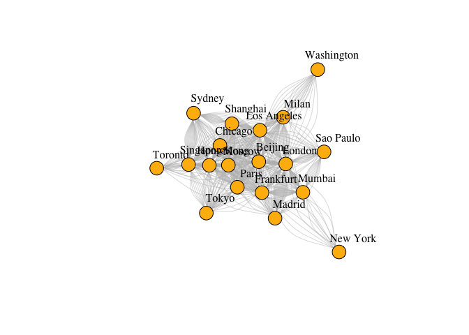
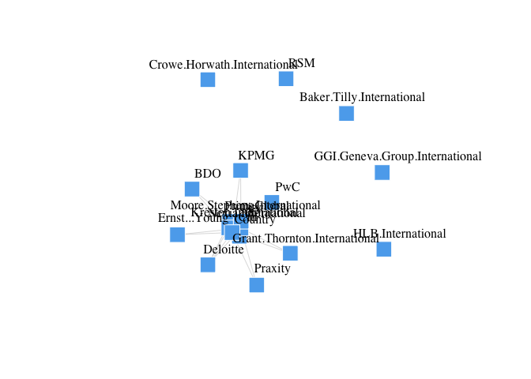
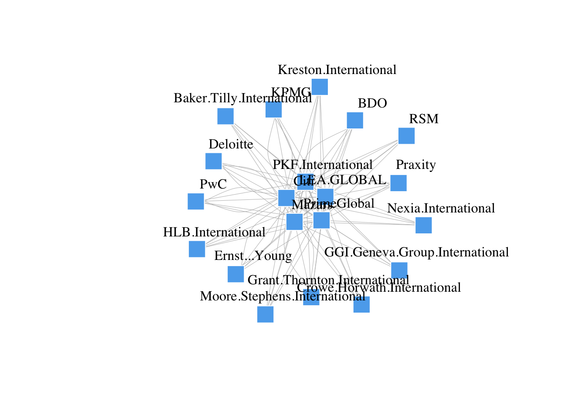
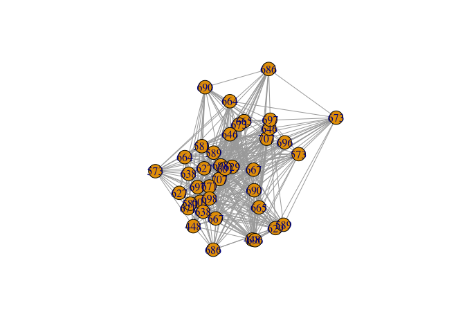

My Final Project Template
Economic interaction among cities after COVID-19
Sunny
Introduction
[~ 200 words]
Clearly stated background and questions / hypotheses / problems being addressed. Sets up the analysis in an interesting and compelling way.
The outbreak of COVID-19 has caused a huge impact on the global economy. To estimate the global economy, the research scale has shifted from countries to cities, and researchers no longer merely focus on a single economic unit but try to estimate the interactions among cities. Thus, to understand the global economy under COVID-19, it is vital to look into the economic interactions among cities. The data set World City Network (WCN) and airline network have been applied to the research of city network, while WCN could estimate the interlocking network of cities through the global location strategies of Advance Produce Service (APS) firms, and the air links between cities are used to evaluate local economic development. However, the two datasets have difficulties estimating real-time city economic interaction during COVID-19. Thus, this study aims to apply social network analysis (SNA) to identify the possible mechanism of the rapid chaining economic city network. By applying QAP or exponential-family random graph models on WCN and airline datasets, this research will interpret the transformation of the role of cities and the configuration in the network before and after the outbreak of COVID-19.
Materials and methods
[~ 200 words]
Narrative: Clear narrative description of the data sources and methods. Includes data from at least two sources that were integrated / merged in R.
Code: The code associated with the project is well organized and easy to follow. Demonstrates mastery of R graphics and functions.
Data: The underlying data are publicly accessible via the web and downloaded/accessed within the Rmd script. If you want to use your own data, you must make it available on a website (e.g. Figshare) so that others are able to re-run your code.
You can do bullets like this:
- The first most important thing
- The second most important thing
- The third most important thing
You can do numbers like this:
- The first most important thing
- The second most important thing
- The third most important thing
See http://rmarkdown.rstudio.com/ for all the amazing things you can do.
Here’s my first code chunk.
Load any required packages in a code chunk (you may need to install some packages):
devtools::install_github("briatte/ggnet")
library(dplyr)
library(igraph)
library(network)
library(intergraph)
library(sna)
library(ggplot2)
library(ggnet)
library(GGally)Download and clean all required data
svm <- read.csv2("/Users/sunnyyueh/Desktop/論文/WCN Data/da28_svm2016.csv", header=TRUE, sep=",")
air.edge<-read.table("/Users/sunnyyueh/Desktop/論文/air Data/2014 airline .csv",sep=",",header = T)
airport_name<-read.csv2("/Users/sunnyyueh/Desktop/論文/air Data/airport0825.csv",sep=",",header = T) combining airline data and airport data
airport<-c('JFK','LCY','HKG','SIN','PVG','PEK','CDG','HND','DXB','ORD','SYD','FRA','GRU','DCA','LAX','YYZ','MXP','MAD','BOM','ICN')
city_list<-c("London","New York","Hong Kong","Singapore","Shanghai","Paris","Beijing","Tokyo","Chicago","Dubai","Sydney","Frankfurt", "Sao Paulo","Washington","Los Angeles","Milan","Madrid", "Mumbai","Toronto","Moscow")
airport<-cbind(airport,city_list)
air.edge<-air.edge %>%
filter(Source.airport == "JFK"|Source.airport == "LCY"|
Source.airport == "HKG"|Source.airport == "SYD"|
Source.airport == "SIN"|Source.airport == "FRA"|
Source.airport == "PVG"|Source.airport == "GRU"|
Source.airport == "PEK"|Source.airport == "DCA"|
Source.airport == "CDG"|Source.airport == "LAX"|
Source.airport == "HND"| Source.airport == "YYZ"|
Source.airport == "DXB"|Source.airport == "MXP"|
Source.airport == "ORG"|Source.airport == "MAD"|
Source.airport == "BOM"|Source.airport == "ICN")
air.edge<-air.edge %>%
filter(Destination.airport == "JFK"|Destination.airport == "LCY"|
Destination.airport == "HKG"|Destination.airport == "SYD"|
Destination.airport == "SIN"|Destination.airport == "FRA"|
Destination.airport == "PVG"|Destination.airport == "GRU"|
Destination.airport == "PEK"|Destination.airport == "DCA"|
Destination.airport == "CDG"|Destination.airport == "LAX"|
Destination.airport == "HND"| Destination.airport == "YYZ"|
Destination.airport == "DXB"|Destination.airport == "MXP"|
Destination.airport == "ORG"|Destination.airport == "MAD"|
Destination.airport == "BOM"|Destination.airport == "ICN")
air.edgeSource.airport Destination.airport1 HKG SIN 2 SIN HKG 3 BOM DXB 4 DXB BOM 5 HKG ICN 6 ICN HKG 7 HKG PVG 8 PVG HKG 9 PVG SIN 10 SIN PVG 11 BOM DXB 12 BOM HKG 13 BOM SIN 14 DXB BOM 15 HKG BOM 16 SIN BOM 17 CDG JFK 18 DCA JFK 19 DCA LAX 20 DCA YYZ 21 GRU JFK 22 GRU LAX 23 HKG JFK 24 HKG LAX 25 JFK CDG 26 JFK DCA 27 JFK GRU 28 JFK HKG 29 JFK LAX 30 JFK LCY 31 JFK MAD 32 JFK MXP 33 JFK YYZ 34 LAX DCA 35 LAX GRU 36 LAX HKG 37 LAX JFK 38 LAX MAD 39 LAX PVG 40 LAX SYD 41 LAX YYZ 42 MAD JFK 43 MAD LAX 44 MXP JFK 45 PVG LAX 46 SYD LAX 47 YYZ DCA 48 YYZ JFK 49 YYZ LAX 50 FRA LCY 51 FRA MAD 52 LCY FRA 53 MAD FRA 54 CDG YYZ 55 DCA YYZ 56 FRA YYZ 57 GRU YYZ 58 HKG YYZ 59 JFK YYZ 60 LAX YYZ 61 PEK YYZ 62 PVG YYZ 63 YYZ CDG 64 YYZ DCA 65 YYZ FRA 66 YYZ GRU 67 YYZ HKG 68 YYZ JFK 69 YYZ LAX 70 YYZ PEK 71 YYZ PVG 72 BOM CDG 73 CDG BOM 74 CDG DXB 75 CDG FRA 76 CDG GRU 77 CDG HKG 78 CDG HND 79 CDG ICN 80 CDG JFK 81 CDG LAX 82 CDG MAD 83 CDG PEK 84 CDG PVG 85 CDG SIN 86 CDG YYZ 87 DXB CDG 88 FRA CDG 89 FRA JFK 90 GRU CDG 91 HKG CDG 92 HND CDG 93 ICN CDG 94 JFK CDG 95 JFK FRA 96 JFK MAD 97 LAX CDG 98 MAD CDG 99 MAD JFK 100 PEK CDG 101 PVG CDG 102 SIN CDG 103 YYZ CDG 104 BOM DXB 105 BOM FRA 106 DXB BOM 107 FRA BOM 108 HKG ICN 109 HKG SIN 110 ICN HKG 111 ICN SIN 112 SIN HKG 113 SIN ICN 114 DCA LAX 115 JFK LAX 116 LAX DCA 117 LAX JFK 118 CDG JFK 119 FRA MAD 120 HKG SYD 121 JFK CDG 122 JFK LCY 123 JFK MAD 124 JFK MXP 125 JFK YYZ 126 LAX MAD 127 MAD FRA 128 MAD JFK 129 MAD LAX 130 MXP JFK 131 SYD HKG 132 YYZ JFK 133 CDG DXB 134 CDG HKG 135 CDG JFK 136 CDG LAX 137 CDG YYZ 138 DXB CDG 139 HKG CDG 140 ICN MXP 141 JFK CDG 142 JFK MXP 143 JFK YYZ 144 LAX CDG 145 MXP JFK 146 YYZ CDG 147 DXB JFK 148 DXB LAX 149 DXB MXP 150 JFK DXB 151 JFK LAX 152 JFK MXP 153 LAX DXB 154 LAX JFK 155 MXP DXB 156 MXP JFK 157 CDG JFK 158 FRA LCY 159 JFK CDG 160 JFK LCY 161 JFK MAD 162 JFK MXP 163 LAX MAD 164 LCY FRA 165 LCY MAD 166 MAD JFK 167 MAD LAX 168 MAD LCY 169 MXP JFK 170 SIN SYD 171 SYD SIN 172 CDG PEK 173 CDG PVG 174 DXB PEK 175 FRA PEK 176 FRA PVG 177 GRU MAD 178 HKG PEK 179 HND PEK 180 ICN PEK 181 JFK PEK 182 LAX PEK 183 LAX PVG 184 MAD GRU 185 MAD PEK 186 MXP PEK 187 MXP PVG 188 PEK CDG 189 PEK DXB 190 PEK FRA 191 PEK HKG 192 PEK HND 193 PEK ICN 194 PEK JFK 195 PEK LAX 196 PEK MAD 197 PEK MXP 198 PEK PVG 199 PEK SIN 200 PEK SYD 201 PEK YYZ 202 PVG CDG 203 PVG FRA 204 PVG LAX 205 PVG MXP 206 PVG PEK 207 PVG SYD 208 PVG YYZ 209 SIN PEK 210 SYD PEK 211 SYD PVG 212 YYZ PEK 213 YYZ PVG 214 BOM HKG 215 CDG HKG 216 DXB HKG 217 FRA HKG 218 HKG BOM 219 HKG CDG 220 HKG DXB 221 HKG FRA 222 HKG HND 223 HKG ICN 224 HKG JFK 225 HKG LAX 226 HKG MXP 227 HKG PEK 228 HKG PVG 229 HKG SIN 230 HKG SYD 231 HKG YYZ 232 HND HKG 233 ICN HKG 234 JFK HKG 235 LAX HKG 236 MXP HKG 237 PEK HKG 238 PVG HKG 239 SIN HKG 240 SYD HKG 241 YYZ HKG 242 HKG PEK 243 ICN PEK 244 ICN PVG 245 PEK HKG 246 PEK ICN 247 PEK PVG 248 PVG ICN 249 PVG PEK 250 CDG JFK 251 CDG LAX 252 CDG YYZ 253 DCA JFK 254 DCA LAX 255 FRA JFK 256 GRU JFK 257 HND LAX 258 ICN JFK 259 ICN LAX 260 JFK CDG 261 JFK DCA 262 JFK FRA 263 JFK GRU 264 JFK ICN 265 JFK LAX 266 JFK MAD 267 JFK MXP 268 JFK PVG 269 JFK YYZ 270 LAX CDG 271 LAX DCA 272 LAX HND 273 LAX ICN 274 LAX JFK 275 LAX PVG 276 LAX SYD 277 MAD JFK 278 MXP JFK 279 PVG JFK 280 PVG LAX 281 SYD LAX 282 YYZ CDG 283 YYZ JFK 284 BOM DXB 285 CDG DXB 286 DXB BOM 287 DXB CDG 288 DXB FRA 289 DXB GRU 290 DXB HKG 291 DXB HND 292 DXB ICN 293 DXB JFK 294 DXB LAX 295 DXB MAD 296 DXB MXP 297 DXB PEK 298 DXB PVG 299 DXB SIN 300 DXB SYD 301 DXB YYZ 302 FRA DXB 303 GRU DXB 304 HKG DXB 305 HND DXB 306 ICN DXB 307 JFK DXB 308 JFK MXP 309 LAX DXB 310 MAD DXB 311 MXP DXB 312 MXP JFK 313 PEK DXB 314 PVG DXB 315 SIN DXB 316 SIN SYD 317 SYD DXB 318 SYD SIN 319 YYZ DXB 320 DXB SIN 321 FRA JFK 322 FRA MAD 323 FRA MXP 324 HKG ICN 325 ICN HKG 326 JFK FRA 327 MAD FRA 328 MXP FRA 329 SIN DXB 330 SIN SYD 331 SYD SIN 332 BOM HKG 333 CDG JFK 334 HKG BOM 335 JFK CDG 336 HKG PVG 337 ICN PVG 338 PVG HKG 339 PVG ICN 340 GRU JFK 341 JFK GRU 342 BOM SIN 343 SIN BOM 344 HKG PVG 345 PVG HKG 346 HKG PEK 347 LAX PVG 348 PEK HKG 349 PEK YYZ 350 PVG LAX 351 YYZ PEK 352 HKG PEK 353 HKG PVG 354 PEK HKG 355 PVG HKG 356 CDG JFK 357 FRA MAD 358 GRU MAD 359 JFK CDG 360 JFK LCY 361 JFK MAD 362 JFK MXP 363 LAX MAD 364 LCY MAD 365 MAD FRA 366 MAD GRU 367 MAD JFK 368 MAD LAX 369 MAD LCY 370 MAD MXP 371 MXP JFK 372 MXP MAD 373 SIN SYD 374 SYD SIN 375 CDG GRU 376 CDG PEK 377 FRA GRU 378 GRU CDG 379 GRU FRA 380 GRU JFK 381 GRU MAD 382 GRU MXP 383 GRU YYZ 384 JFK GRU 385 MAD GRU 386 MAD PEK 387 MXP GRU 388 PEK CDG 389 PEK MAD 390 YYZ GRU 391 CDG HND 392 DXB HND 393 HKG HND 394 HND CDG 395 HND DXB 396 HND HKG 397 HND PEK 398 HND SIN 399 PEK HND 400 SIN HND 401 HKG PEK 402 HKG PVG 403 PEK HKG 404 PVG HKG 405 BOM ICN 406 CDG ICN 407 DXB ICN 408 FRA ICN 409 GRU LAX 410 HKG ICN 411 HND ICN 412 ICN BOM 413 ICN CDG 414 ICN DXB 415 ICN FRA 416 ICN HKG 417 ICN HND 418 ICN JFK 419 ICN LAX 420 ICN MAD 421 ICN MXP 422 ICN PEK 423 ICN PVG 424 ICN SIN 425 ICN SYD 426 ICN YYZ 427 JFK ICN 428 LAX GRU 429 LAX ICN 430 MAD ICN 431 PEK ICN 432 PVG ICN 433 SIN ICN 434 SYD ICN 435 YYZ ICN 436 FRA JFK 437 JFK FRA 438 JFK MAD 439 MAD JFK 440 FRA MAD 441 GRU MAD 442 MAD FRA 443 MAD GRU 444 BOM FRA 445 CDG FRA 446 CDG YYZ 447 DXB FRA 448 FRA BOM 449 FRA CDG 450 FRA DXB 451 FRA GRU 452 FRA HKG 453 FRA HND 454 FRA ICN 455 FRA JFK 456 FRA LAX 457 FRA LCY 458 FRA MAD 459 FRA MXP 460 FRA PEK 461 FRA PVG 462 FRA SIN 463 FRA YYZ 464 GRU FRA 465 HKG FRA 466 HND FRA 467 ICN FRA 468 JFK FRA 469 LAX FRA 470 LCY FRA 471 MAD FRA 472 MXP FRA 473 PEK FRA 474 PVG FRA 475 SIN FRA 476 YYZ CDG 477 YYZ FRA 478 HKG ICN 479 ICN HKG 480 DXB SIN 481 SIN DXB 482 CDG PEK 483 CDG PVG 484 FRA PVG 485 HKG PVG 486 HND PEK 487 ICN PVG 488 JFK PVG 489 LAX PVG 490 PEK CDG 491 PEK HND 492 PEK PVG 493 PVG CDG 494 PVG FRA 495 PVG HKG 496 PVG ICN 497 PVG JFK 498 PVG LAX 499 PVG PEK 500 PVG SIN 501 PVG SYD 502 SIN PVG 503 SIN SYD 504 SYD PVG 505 SYD SIN 506 CDG HND 507 FRA HND 508 HKG HND 509 HND CDG 510 HND FRA 511 HND HKG 512 HND ICN 513 HND LAX 514 HND PEK 515 HND SIN 516 ICN HND 517 LAX HND 518 PEK HND 519 PEK PVG 520 PVG PEK 521 SIN HND 522 LAX SYD 523 PEK PVG 524 PVG PEK 525 PVG SYD 526 SYD LAX 527 SYD PVG 528 CDG ICN 529 FRA ICN 530 HKG ICN 531 HND ICN 532 ICN CDG 533 ICN FRA 534 ICN HKG 535 ICN HND 536 ICN JFK 537 ICN LAX 538 ICN PEK 539 ICN PVG 540 ICN SIN 541 ICN SYD 542 JFK ICN 543 LAX ICN 544 PEK ICN 545 PVG ICN 546 SIN ICN 547 SYD ICN 548 CDG MXP 549 MXP CDG 550 DXB FRA 551 DXB SIN 552 DXB SYD 553 FRA DXB 554 HKG SYD 555 HND SIN 556 ICN SYD 557 JFK LAX 558 LAX JFK 559 LAX SYD 560 PVG SYD 561 SIN DXB 562 SIN HND 563 SIN SYD 564 SYD DXB 565 SYD HKG 566 SYD ICN 567 SYD LAX 568 SYD PVG 569 SYD SIN 570 CDG JFK 571 JFK CDG 572 JFK MXP 573 MXP JFK 574 CDG JFK 575 JFK CDG 576 BOM SIN 577 CDG SIN 578 DXB SIN 579 FRA JFK 580 FRA SIN 581 HKG SIN 582 HND SIN 583 ICN SIN 584 JFK FRA 585 MXP SIN 586 PEK SIN 587 PVG SIN 588 SIN BOM 589 SIN CDG 590 SIN DXB 591 SIN FRA 592 SIN HKG 593 SIN HND 594 SIN ICN 595 SIN MXP 596 SIN PEK 597 SIN PVG 598 SIN SYD 599 SYD SIN 600 HKG ICN 601 ICN HKG 602 ICN LAX 603 LAX ICN 604 ICN SYD 605 SYD ICN 606 CDG LAX 607 LAX CDG 608 HKG SIN 609 SIN HKG 610 CDG YYZ 611 YYZ CDG 612 HKG SIN 613 SIN HKG 614 SIN SYD 615 SYD SIN 616 CDG MAD 617 CDG MXP 618 MAD CDG 619 MAD MXP 620 MXP CDG 621 MXP MAD 622 FRA JFK 623 FRA LAX 624 HKG SIN 625 HND LAX 626 ICN JFK 627 ICN LAX 628 JFK FRA 629 JFK ICN 630 JFK LAX 631 JFK PEK 632 LAX FRA 633 LAX HND 634 LAX ICN 635 LAX JFK 636 LAX PEK 637 LAX PVG 638 LAX SYD 639 LAX YYZ 640 PEK JFK 641 PEK LAX 642 PVG LAX 643 SIN HKG 644 SYD LAX 645 YYZ LAX 646 HKG HND 647 HKG ICN 648 HND HKG 649 ICN HKG 650 CDG JFK 651 DCA JFK 652 DCA LAX 653 DCA YYZ 654 FRA JFK 655 FRA SIN 656 GRU JFK 657 GRU LAX 658 HKG SIN 659 ICN SIN 660 JFK CDG 661 JFK DCA 662 JFK FRA 663 JFK GRU 664 JFK LAX 665 JFK MAD 666 JFK MXP 667 JFK PEK 668 JFK YYZ 669 LAX DCA 670 LAX GRU 671 LAX JFK 672 LAX PEK 673 LAX PVG 674 LAX YYZ 675 MAD JFK 676 MXP JFK 677 PEK JFK 678 PEK LAX 679 SIN FRA 680 SIN HKG 681 SIN ICN 682 YYZ DCA 683 YYZ JFK 684 YYZ LAX 685 FRA MAD 686 GRU MAD 687 JFK MAD 688 MAD FRA 689 MAD GRU 690 MAD JFK 691 MAD MXP 692 MXP MAD 693 LAX SYD 694 SIN SYD 695 SYD HKG 696 SYD LAX 697 SYD SIN 698 FRA MAD 699 MAD FRA 700 SYD HKG 701 JFK LAX 702 LAX JFK 703 CDG MAD 704 MAD CDG 705 JFK YYZ 706 LAX YYZ 707 YYZ JFK 708 YYZ LAX 709 HKG ICN 710 ICN HKG 711 PEK PVG 712 PVG PEK
air.edge<-merge(air.edge,airport,by.x="Source.airport",by.y="airport",all.x=TRUE)
names(air.edge)[3]<-"Source"
air.edge<-merge(air.edge,airport,by.x="Destination.airport",by.y="airport",all.x=TRUE)
names(air.edge[4])<-"Destination"
air.edge<-air.edge[3:4]air.g<- graph.data.frame(air.edge,directed = F)
#V(air.g)$name<-V(air.g)$city_list
plot(air.g)
Cities <- svm[,"City"]
Firms <- colnames(svm)[-c(1:3)]
svm <- svm[,-c(1:3)]
row.names(svm) <- Cities
svm_mat <- data.matrix(svm, rownames.force=TRUE)
#finding top 20 firms
firm_sum<-as.data.frame(colSums(svm_mat))
firm20<-firm_sum%>%
arrange(desc(colSums(svm_mat)))%>%
slice(n=1:20)
firm_list<-row.names(firm20)
#finding top 20 cities
city_sum<-as.data.frame(rowSums(svm_mat))
city20<-city_sum%>%
arrange(desc(rowSums(svm_mat)))%>%
slice(n=1:20)
city_list<-row.names(city20)
svm_mat_small<-svm_mat[city_list,]
svm_mat_small<-svm_mat_small[,firm_list]
city_m<-tcrossprod(svm_mat_small, y=NULL)
firm_m<-tcrossprod(t(svm_mat_small), y=NULL)
# nw <- cbind(rbind(firm_nw, diag(20)), rbind(diag(20), city_nw))
# nw <- network(nw, directed = T)
# nw%v%"layer.mem" <- c(rep(1, 20), rep(2, 20))
# nw%v%"type" <- rep(types, 2)
diag(firm_m)<-0
firm_m<-firm_m*0.01
firm_m<-rbind(firm_m[1:15,]*0,firm_m[16:20,])
firm.g<- graph.adjacency(firm_m, mode="undirected",weighted = NULL)
plot(firm.g)
plot(firm.g,
vertex.color="steelblue2", #node color
vertex.size=15,# node size
vertex.label.color="black", #text color
vertex.label.dist=3, # text of distance from node
edge.color="grey74", #edges color
edge.width=0.5,
alpha=0.5,
vertex.shape="square",
layout=layout_nicely(firm.g),
vertex.frame.color="#ffffff") # lwd of edges
city_m<-tcrossprod((svm_mat_small), y=NULL)
city_nw <- graph.incidence(city_m,mode = c("all"),weighted = T,directed = F)
plot(city_nw)
row.names(city_m)## [1] "New York" "London" "Hong Kong" "Singapore" "Shanghai"
## [6] "Beijing" "Paris" "Tokyo" "Dubai" "Chicago"
## [11] "Sydney" "Frankfurt" "Sao Paulo" "Washington" "Los Angeles"
## [16] "Toronto" "Milan" "Madrid" "Mumbai" "Seoul"city_cor<- read.csv2("/Users/sunnyyueh/Desktop/論文/計畫書資料/Demo/20city_coor_1010.csv", header=TRUE, sep=",")
city_nw<-set_vertex_attr(graph=city_nw,name="lat", value=city_cor$lat)
city_nw<-set_vertex_attr(graph=city_nw,name="lon", value=city_cor$lon)
plot(city_nw)# feed centroid coordinates to igraph)
flights <- network(city_m, directed = TRUE)
flights %v% "lat" <- as.numeric(city_cor$lat)
flights %v% "lon" <- as.numeric(city_cor$lon)## Warning: NAs introduced by coercionflights %v% "City"<-city_cor$City
invisible(lapply(c("ggplot2", "maps", "network", "sna"), base::library, character.only = TRUE))
world <- fortify(map("world", plot = FALSE, fill = TRUE))
world <- ggplot(world, aes(x = long, y = lat)) +
geom_polygon(aes(group = group), color = "grey65",
fill = "#f9f9f9", size = 0.2)
a<-as.vector((rnorm(342,0.5,0.4))^2)
p <- ggnetworkmap(world,flights,
node.color = "red3",
node.alpha = 0.6,
great.circles = FALSE,
segment.color="gray60",
label.nodes = TRUE,
label.size = 3.5,
size=10,
segment.size = a)+
labs(color="nodes")
plot(p)## Warning: Removed 1 rows containing missing values (geom_point).## Warning: Removed 1 rows containing missing values (geom_text).
Results
[~200 words]
Tables and figures (maps and other graphics) are carefully planned to convey the results of your analysis. Intense exploration and evidence of many trials and failures. The author looked at the data in many different ways before coming to the final presentation of the data.
Show tables, plots, etc. and describe them.
Conclusions
[~200 words]
Clear summary adequately describing the results and putting them in context. Discussion of further questions and ways to continue investigation.
References
All sources are cited in a consistent manner